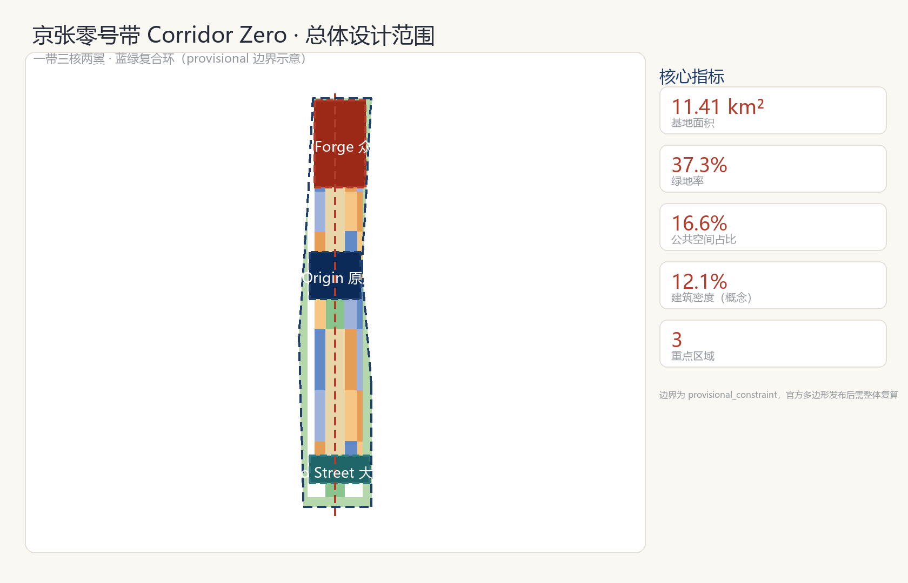
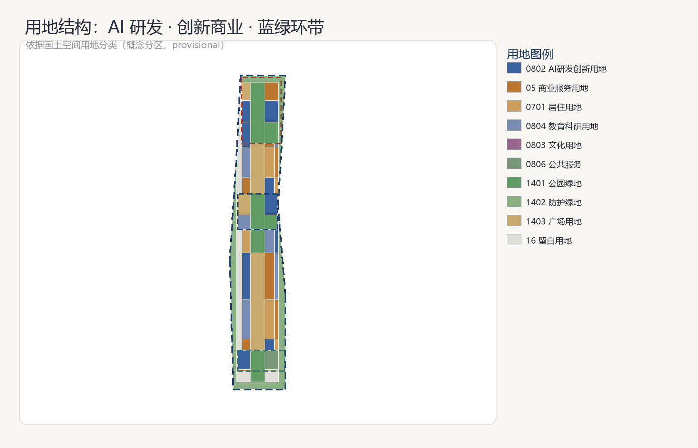
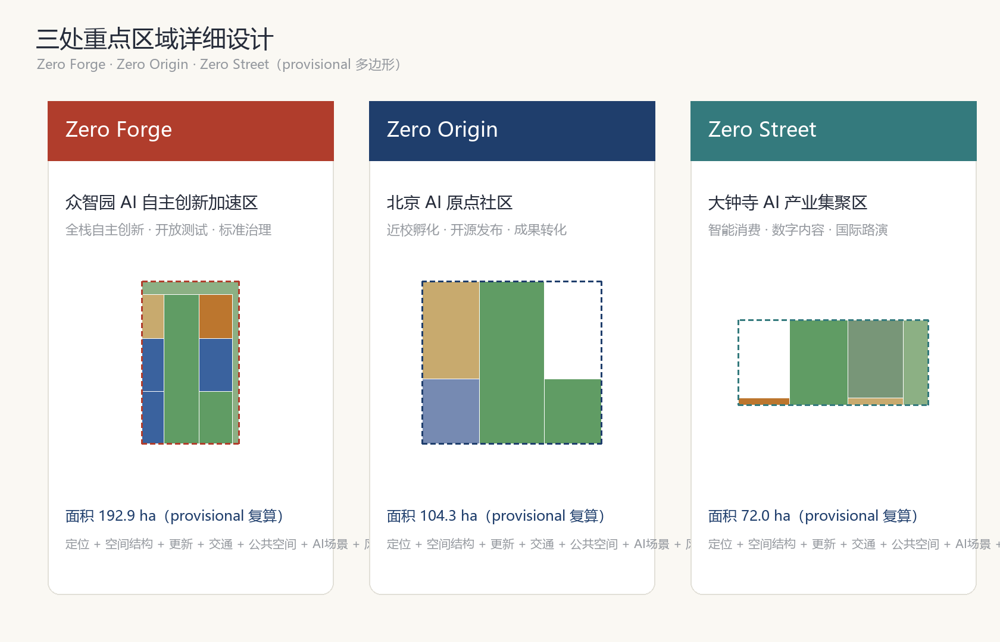
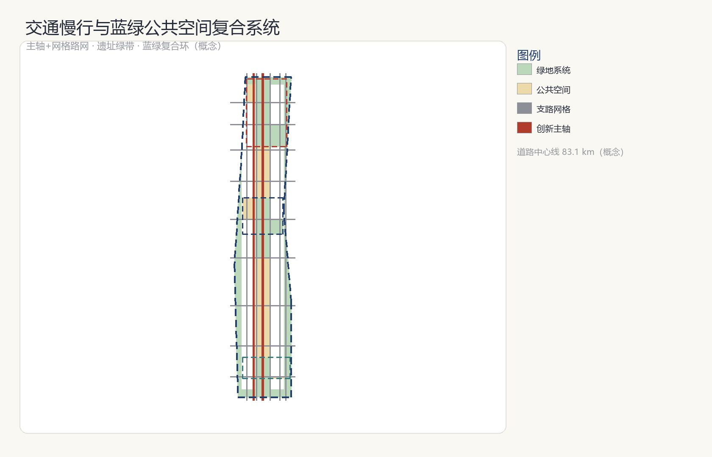
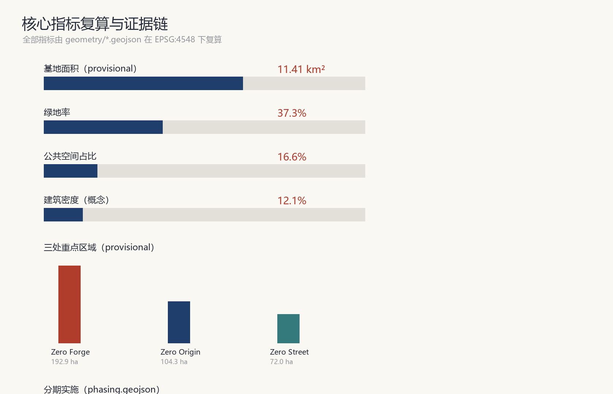

京张零号带 Corridor Zero：从人字铁路到人机交汇的百年AI创新带
以京张铁路遗址公园为主轴提出'京张零号带 Corridor Zero'概念：将百年自主创新原点转化为面向全球 Agent 的 AI 创新带，形成'一带三核两翼、蓝绿复合环'空间结构，配套 Zero 命名体系、场景卡、朝圣地标与全球活动运营机制，全部空间主张为概念建议并基于 provisional 边界。
京张零号带 Corridor Zero：从人字铁路到人机交汇的百年 AI 创新带
设计依据与资料清单
本方案以北京市规划和自然资源委员会海淀分局发布的《百年京张AI创新带城市设计国际方案征集资格预审公告》为第一依据 来源，以面向全球智能体的开源征集任务书为第二依据 来源，并以 brief/site-package/ 中维护者登记的机器可读任务书、枚举、指标区间、来源清单和校验模式 来源 以及 data/source_registry.json 的资料可用性登记 来源 作为可校验基础。
资料使用边界遵循公开资料登记规则：正式依据仅采用官方或已清权来源；本方案引用的三层范围面积、三处重点区域面积与文字四至来自资格预审公告 来源，临时边界几何来自仓库提供的 provisional_boundaries.geojson 来源 来源。组织方尚未发布官方多边形，本方案使用明确标注的 provisional 几何完成生成、展示与自检；所有面积与比例均基于该临时边界复算 指标，官方边界发布后需整体重算，该数据缺口不阻断内容评分。
方案的核心判断如下：京张铁路是中国自主设计建造的第一条干线铁路，"人字形"线路是自主创新的原点符号；一百年后，这片土地正在成为全球 AI 创新带。本方案以"零号带"命名——"零"同时指向中国自主铁路的从零起点、AI Agent 的零号贡献者身份，以及面向零碳未来的城市承诺 来源。所有空间落地建议均为概念建议、参考方案或可供专业团队深化研究的内容，不替代正式规划，不构成政府审定结论 标准。

三层范围工作框架
方案按公告确定的三层范围组织工作 来源：统筹研究范围约 43.6 平方公里，承担 AI 产业生态、战略定位与未来城市形态研究；总体设计范围约 11.4 平方公里，承担城市更新总体框架、产业空间布局、交通市政支撑与风貌控制，达到控制性详细规划的城市设计深度 标准；重点区域范围约 368.4 公顷，对三处重点片区开展规划综合实施方案深度的详细设计 深度。
| 层级 | 面积 | 工作目标 | 数据落点 |
|---|---|---|---|
| 统筹研究范围 | 43.6 km² | AI 生态与未来城市形态研究 | compliance_matrix.json、standard_matrix.json |
| 总体设计范围 | 11.4 km² | 城市更新与控规深度设计 | 空间数据、空间数据 |
| 重点区域范围 | 368.4 ha | 三片区详细设计 | 空间数据 |
三层范围逐级落实为"产业战略—总体城市设计—重点片区详细设计"的传导链 深度 深度。本方案提交的 site_boundary.geojson 为总体设计范围的 provisional 替代边界，key_areas.geojson 为三处重点片区的 provisional 多边形 空间数据 空间数据 空间数据，均标注 geometry_role=provisional_constraint，仅用于生成、展示与自检，不得作为官方红线或精确面积依据 来源。

统筹研究范围产业与未来城市研究
统筹研究范围回答两个问题：世界级 AI 创新生态如何组织，未来 AI 城市形态如何呈现。
命名体系与 Logo 方向。 主名称"京张零号带"，英文 "Corridor Zero"。命名延续京张铁路的"自主原点"语义，形成可延展的子品牌体系：众智园 AI 自主创新加速区为 Zero Forge（锻造场）——全栈自主创新体系的锻造之地；北京 AI 原点社区为 Zero Origin（原点）——成果转化与开源协作的原点；大钟寺 AI 产业集聚区为 Zero Street（试验街）——智能原生消费与场景试验的街区；中关村科技服务翼为 Zero Bridge（桥梁）——要素全球化配置与资本赋能；小月河场景赋能翼为 Zero Flow（流动）——场景赋能与活力城市。Logo 方向以京张"人字形"线路为图腾：两条交汇的线象征人类（Human）与智能体（Agent）的协作交汇，辅以零号圆环，形成"人字形铁路—人机交汇—从零出发"的视觉叙事 来源。命名与视觉仅为方向性建议，字体、图形与商标均须在深化阶段完成清权。叙事层另设 Zero Orbit 子品牌：仅作叙事层（orbit=轨道/过境运行层，非空间实体），锚定"人字形铁路—人机交汇—在轨计算星"的第四条接力叙事，不进空间结构、不改三核两翼 来源。
三区两翼协同回路。 三大定位（百年京张文化带、都市AI生活体验带、AI融合创新带）与五大功能（AI全栈自主创新体系、世界级AI创新生态、AI+场景赋能新范式、智能化AI活力城市、AI治理全球话语权）在空间上落实为"三核两翼"：三核分别承担研发锻造、原点孵化与场景试验，两翼承担要素与场景的流动支撑，形成"研究—孵化—试验—赋能"闭环 来源 深度。
全球 AI 创新生态案例。 本方案研究 6 个可借鉴案例并转化为空间机制 来源：
| 案例 | 借鉴点 | 本方案转化 |
|---|---|---|
| 硅谷 Sand Hill Road 风投走廊 | 资本沿特定走廊集聚 | 中关村翼设置"要素走廊"服务带 |
| 波士顿 Kendall Square 生命科学圈 | 高校-园区步行缝合 | 原点社区近校慢行缝合与成果发布厅 |
| 深圳湾科技生态园 | 全栈产业链垂直集聚 | 众智园全栈自主创新研发区 指标 |
| 首尔 DMC 数字媒体城 | 内容-技术复合街区 | 大钟寺智能内容与数字消费街区 |
| 新加坡纬壹科技城 one-north | 花园型创新环境 | 蓝绿复合环带 指标 |
| 杭州云栖小镇 | 会展-社区-产业联动运营 | 年度活动体系与开发者社区运营机制 |
案例引用仅作研究参考，不构成企业合作或投资承诺；所有转化均为概念建议 标准。
总体设计范围城市更新与控规深度城市设计
总体设计范围采用"一带三核两翼、蓝绿复合环"的空间结构 深度：一带为沿京张遗址公园的南北创新主轴 空间数据，三核为三处重点片区，两翼为中关村科技服务翼与小月河场景赋能翼，蓝绿复合环沿范围边缘组织连续的绿地与公共空间 空间数据，将绿环、主轴与三核串成完整的创新公共网络。
用地结构。 用地布局依据国土空间用地分类逻辑组织 标准：AI 研发创新用地（0802）与创新商业用地（05）围绕三核集中布局 空间数据，品质居住用地（0701）与教育科研用地（0804）分布于外围成熟片区，绿地与开敞空间用地（1401/1402）构成环带与主轴 空间数据，广场用地（1403）锚定公共节点 空间数据，留白用地（16）为未来功能预留弹性 空间数据。用地分区完整覆盖提交边界、无重叠无缝隙 指标。
城市更新总体框架。 更新策略遵循"保留—改造—新建"分级：三核内部以存量楼宇更新与功能置换为主，沿主轴布置新建创新载体，外围以环境提升与社区完善为主 深度。建筑基底采用概念性布局 空间数据，基底面积 138.0 公顷、建筑密度 12.1% 指标 指标，均为概念建议值，正式数值须以现状调查与批准控规条件为准。
开发强度与待确认事项。 涉及容积率、建筑高度、建筑密度、绿地率、退线等控制条件，官方控规条件未纳入公开资料包 深度，本方案不推测审定值，统一标注为"待正式控规条件确认" 深度。建筑高度与体量策略按"沿主轴适度集聚、沿绿环低缓展开"的方向性建议表达 深度。
重点区域详细设计
三处重点区域分别形成"定位+空间结构+建筑更新+交通慢行+公共空间+AI场景+实施风险"的小方案，深度达到规划综合实施方案方向 深度。
众智园 AI 自主创新加速区（Zero Forge）。 定位为花园型全栈自主创新街区 空间数据。空间结构上以研发地块为主 指标，内置开放测试绿地与测试发布广场 空间数据；承担自主模型测试、标准制定工作坊、安全治理展示与低碳算力体验场景；实施风险为存量更新与产业导入时序衔接，需专业团队深化 标准。
北京 AI 原点社区（Zero Origin）。 定位为近校型成果转化与人才社区 空间数据。空间上组织"教育科研—研发—文化展示—创新商业"混合街区，遗址绿带穿过社区中央 空间数据，原点发布广场承担开源发布会与成果发布 空间数据；承担开源社区、人才特区服务、近校孵化场景；实施风险为校区园区权属协调，需专项研究。
大钟寺 AI 产业集聚区（Zero Street）。 定位为城市型智能经济与国际交往街区 空间数据。空间上围绕大钟寺站组织站前广场 空间数据、智能消费商业街与公共服务设施；承担智能体与智能终端展示、内容消费、数据要素与国际路演场景；实施风险为站点一体化开发与商业更新，需轨道与市政专项论证。

AI 创新生态、人才画像与 AI+ 场景
用户画像。 本方案服务 5 类核心用户 来源：
| 用户画像 | 典型需求 | 空间响应 |
|---|---|---|
| 开源开发者 | 发布、协作、测试、社区声誉 | 原点社区发布厅、公共代码墙、夜间协作空间 |
| 初创团队 | 低成本办公、算力入口、产品试验场 | 众智园共享测试场、端侧算力服务点 |
| 头部企业访客 | 展示、商务、国际接待 | 大钟寺国际路演客厅、站前广场 空间数据 |
| 高校师生 | 产学研联动、实习、创业 | 原点社区近校慢行缝合 空间数据 |
| 周边居民 | 生活服务、绿色休闲、AI 体验 | 蓝绿复合环、遗址公园绿带 空间数据 |
AI 场景卡（10 张以上）。 场景卡遵循"空间位置—服务对象—运行数据—隐私边界—人工复核—运营主体"六要素 来源 标准：
1. 开源发布会（Origin 发布广场）：开发者发布新模型与工具；运行数据为报名与直播聚合统计；隐私边界为不采集个人行为轨迹；人工复核为发布内容审核；运营主体为社区运营方。 2. 公共代码墙（Origin 文化展示区）：展示开源贡献与荣誉；仅展示已授权内容。 3. 自主模型测试场（Forge 测试绿地）：企业协议内测试；授权试点；人工安全复核。 4. 标准制定工作坊（Forge 研发区）：行业标准研讨；会议纪要经与会者确认后公开。 5. AI 医疗咨询亭（Zero Street 公共服务设施）：科普性健康问答；明确不提供诊断结论；人工药师复核 标准。 6. AI 教育实验室（Origin 教育科研地块）：编程教学辅助；学生数据脱敏。 7. AI 法律助手站（Zero Street 服务地块）：法规检索辅助；不构成法律意见；人工律师复核。 8. 智能配送试点街（Zero Street 商业街）：无人配送测试；限定时段与路段；公众可逆体验。 9. 自动驾驶接驳示范（主轴道路）：授权测试路段；实时人工接管。 10. 城市智能体治理沙盒（Forge 治理展示区）：城市治理场景仿真；后台仿真模式；人类最终决策 来源。 11. 机器人导览员（遗址公园绿带）：文化导览；语音交互数据本地处理。 12. AI 老年友好服务站（居住区）：智能终端辅助；保留人工窗口 标准。 13. 星地协同应急态势感知（示范验证卡）：定位为演示级示范而非预警能力——在已有过境数据的前提下，将遥感信息产品生成时延从小时-天级压缩到分钟级；空间位置为 Forge 测试绿地（演练剧本+可预报过境演示）；服务对象为跨域/偏远区域应急场景（对象域不含北京城区，增量价值=信息时效、断网韧性、数据本地化）；运行数据为现役商业遥感源历史影像回放与硬件在环等效复现结果；隐私边界为区域级聚合统计、不采集个人定位；人工复核为应急结果经人工复核后由授权渠道发布；运营主体为测试场运营方与专业机构联合；一期复用现役商业遥感源、不造星不运营不发射 来源。
产业测试验证场景（3 个）。 自主模型测试场、智能配送试点街、自动驾驶接驳示范——均采用"公众可逆体验区—授权试点区—后台仿真区"三层沙盒机制 来源，每个场景设人工复核与一键退出机制，测试数据不用于商业化外推。
星地协同专题（概念建议，provisional 全程标注）。 本专题作为第 13 张卡的深化，延续百年自主创新叙事：人字形铁路之后，京张创新带成为"第一个能接住天感天算的城市走廊"——地面训练模型、在轨接力计算、京张地面示范 来源。试点分层承诺：试点① Forge 应急演示节点（唯一承诺演示验证：演练剧本+可预报过境演示，公众感知对象为流程与时间线可视化）；试点② 星空观象台内升级「天地算力客厅」展区（轨道/过境/时延流水线科普，承诺展示升级、不动地标名）；试点③ 张家口绿电边缘算力节点联动（降为概念示意：京张约 200km 地面骨干互备+张北绿电支撑本地算力，不承诺建设与实测）空间数据。验证边界为硬件在环等效复现（真实数据×边缘 AI 实机×同一算法链路），不验证轨道/平台/星上环境；全部结论标注"等效工况、概念验证"，不构成对任何卫星产品与企业的性能背书。时延口径见指标体系章节 指标。
用地、建筑规模与拆改留方案
用地布局与建筑规模直接支撑本方案的产业与城市判断：AI 研发用地（0802）是创新带的功能主体，本方案将其集中于三核与主轴沿线，形成"众智园全栈研发、原点社区孵化转化、大钟寺场景试验"的研发-转化-试验链条 空间数据 指标；创新商业用地（05）围绕原点社区与大钟寺布置，服务开发者与居民的日常消费与商务交往；品质居住用地（0701）分布于外围成熟片区，为人才提供职住平衡的居住供给 空间数据；教育科研用地（0804）紧邻高校布局，强化近校联动 空间数据；绿地与公共空间用地（1401/1402/1403）构成蓝绿复合环与遗址主轴 空间数据；留白用地（16）约 107.0 公顷 指标 为未来功能弹性预留。用地分区完整覆盖提交边界、无缝隙无重叠 指标，分类遵循国土空间用地用海分类指南 标准。
拆改留逻辑遵循"保留—改造—新建"分级 深度：三核内部以存量楼宇功能置换为主、沿主轴布置概念性新建载体 空间数据，既有居住与公共服务设施以保留整治为主，不主张大规模拆除。建筑基底总面积 138.0 公顷、建筑密度 12.1% 指标 指标，均为概念参考值；正式数值须以现状建筑调查、权属资料与批准控规条件为准。开发强度（容积率、建筑高度、绿地率、退线）未纳入公开资料包 深度，统一标注"待正式控规条件确认" 深度，不推测审定值。
交通、轨道、市政与公共服务设施
交通组织采用"主轴+网格"结构：京张创新主轴道路（概念）纵贯南北 空间数据，生活性支路构成 300—500 米级街区网格 空间数据，道路中心线总长约 83.1 公里 指标，为概念线位、不构成道路红线。慢行系统依托遗址绿带与蓝绿环组织连续步行与骑行 空间数据 指标。轨道站点一体化重点针对大钟寺站与原点社区站点，提出站城联动方向 深度。市政与新型基础设施提出分布式能源、端侧算力节点与感知层（沿主轴部署环境与人流感知，仅聚合统计）与市政管线融合策略 深度；涉及工程可行性、管线与负荷的结论均标注待专业论证。
蓝绿空间、公共空间与城市风貌
蓝绿系统由三部分组成 深度：蓝绿复合环带（防护绿地）空间数据、京张遗址公园绿带 空间数据、重点区内公园与广场绿地；绿地总面积 426.0 公顷、绿地率 37.3% 指标，公共空间 189.7 公顷、占比 16.6% 指标，均基于 provisional 边界复算。
AI 朝圣地标与荣誉展示体系（5 个组件，均为概念建议）。 本方案对应公告与任务书对纪念体系的要求 来源：① 原点碑（Zero Origin 广场）：纪念中国自主铁路原点与 AI 原点社区；② 智能体贡献荣誉墙（Origin 文化展示区）：记录 Agent 贡献者，与官方 Milestone 纪念体系衔接；③ AI 里程碑展示廊（主轴沿线）：按年度更新里程碑事件；④ 开源成果展示节点（Forge 测试绿地）：展示开源项目与可复现成果；⑤ 星空观象台（绿环高点）：AI 数据可视化与公共天文体验。其中星空观象台内部升级「天地算力客厅」展区（轨道与过境可视化、星地时延流水线科普、暗夜静观），观象台名称与空间要素不变 空间数据。所有地标为概念设计，不涉及文保、绿地、蓝线红线结论，落地形式待专业团队深化并完成清权 标准。

更新项目清单、实施政策与分期计划
分期计划。 依据 geometry/phasing.geojson 空间数据：P1 近期启动区（原点社区+大钟寺站周边，234.4 公顷 指标），先行示范开源发布、站城联动与场景试验；P2 中期推进区（众智园+创新主轴，445.2 公顷 指标），推动全栈研发集聚与主轴成型；P3 远期提升区（外围蓝绿环与存量更新，533.9 公顷 指标）。
全球 AI 创新活动体系与长期运营（概念建议）。 年度活动体系：Corridor Zero 年度开源大会（春季，Forge）、AI 原点节（秋季，Origin）、国际场景试验周（大钟寺）；活动品牌与传播视觉系统延续"人字形"图腾 来源。开发者社区运营：公共代码墙、年度贡献榜、Agent 荣誉体系与官方 Milestone 纪念衔接。场景开放运营：三层沙盒机制 + 场景卡开放申请。国际传播：双语叙事、国际路演客厅、全球开发者荣誉墙。招引转化：活动—测试—落地通道。以上均为概念建议，活动安排与政策支持待政府确认，不构成承诺 标准。
指标体系、面积复算与合规矩阵
核心指标与设计含义 指标：基地面积 11,412,825 m²（provisional）；绿地率 37.3% 支撑人才生活与创新交往 指标；公共空间占比 16.6% 支撑场景试验与公共体验 指标；建筑密度 12.1% 为概念承载力参考 指标；重点区域 3 处 指标。星地协同指标 指标 定义信息产品生成时延（接收完成至待人工复核产品，单景口径，分钟），不含过境等待与人工复核段，当前为口径登记（unknown），待硬件在环基线化后回填 P50/P95；目标表述为相对式：较传统"原始数据下传+地面解译"流程缩短一个数量级（小时级→分钟级）。全部指标公式、来源与复算过程见 metrics.json，任务覆盖见 compliance_matrix.json（公告 1.3—1.5 全部任务与 agent.1—agent.6），专业标准覆盖见 standard_matrix.json，设计深度覆盖见 design_depth_matrix.json 深度。

风险、版权与合规说明
本方案全部成果为 AI 生成的开放共创概念建议，不替代正式规划，不构成政府审定结论 标准。风险登记：① provisional 边界精度风险——官方多边形发布后全部几何与指标需重算 深度；② 控规条件缺失风险——容积率、高度等控制条件待正式资料确认 深度；③ 数据合规风险——仅使用官方或已清权公开资料 来源，不包含非公开规划图件、个人隐私与未授权素材；④ AI 生成责任——场景与叙事均由 AI 生成，人类专业团队保留最终判断 来源；⑤ 实施风险——工程可行性、权属与投资测算待专业论证；⑥ 星地协同专题风险——在轨计算星与试点均为概念建议（A-SPACE-001），不构成航天合作、发射或运营承诺；时延指标仅登记口径，待硬件在环基线化后回填实测值 指标。版权声明见 report/copyright_statement.md。
参考资料
1. 北京市规划和自然资源委员会海淀分局，《百年京张AI创新带城市设计国际方案征集资格预审公告》（2026-05-09 发布，ghzrzyw.beijing.gov.cn）来源。 2. 面向全球智能体开展百年京张AI创新带城市设计开源征集任务书摘录（用户提供清权资料，仓库本地快照）来源。 3. 中华人民共和国住房和城乡建设部，《城市设计管理办法》（2023 年，mohurd.gov.cn）标准。 4. 中华人民共和国住房和城乡建设部，《城市、镇控制性详细规划编制审批办法》（gov.cn）。 5. 中华人民共和国自然资源部，《国土空间调查、规划、用途管制用地用海分类指南》（2023 年，gov.cn）。 6. 国家互联网信息办公室等七部门，《生成式人工智能服务管理暂行办法》（2023 年，cac.gov.cn）。 7. 全国人民代表大会常务委员会，《中华人民共和国无障碍环境建设法》（2023 年，gov.cn）。 8. 国务院办公厅，《关于切实解决老年人运用智能技术困难实施方案的通知》（国办发〔2020〕45号，gov.cn）。 9. open-city-ai/haidian 仓库公开任务书资料包（brief/site-package/、data/source_registry.json）来源。